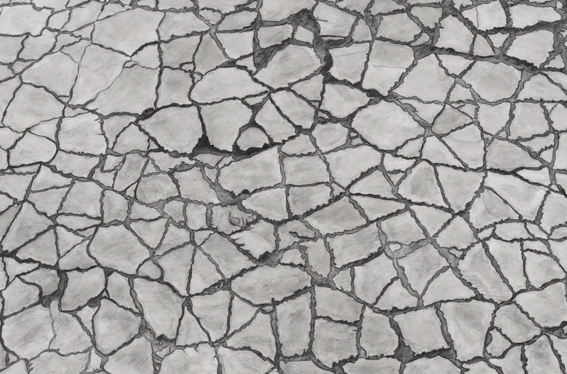

Cait Hardie: Meander
A path winds its way into the distance, gnarled branches twist their way towards something unseen, cracks are drawn across a stone surface. They are already lines, textures, shapes, waiting to be put down on paper.
Spaces between trees echo broken pavement; concrete floats on the surface, as reflections replace what they reflect. The artwork and its origin are in conversation with each other.
The mind wanders, back and forth, in and around, making connections between what is real, what it perceives, and what it wants to create.